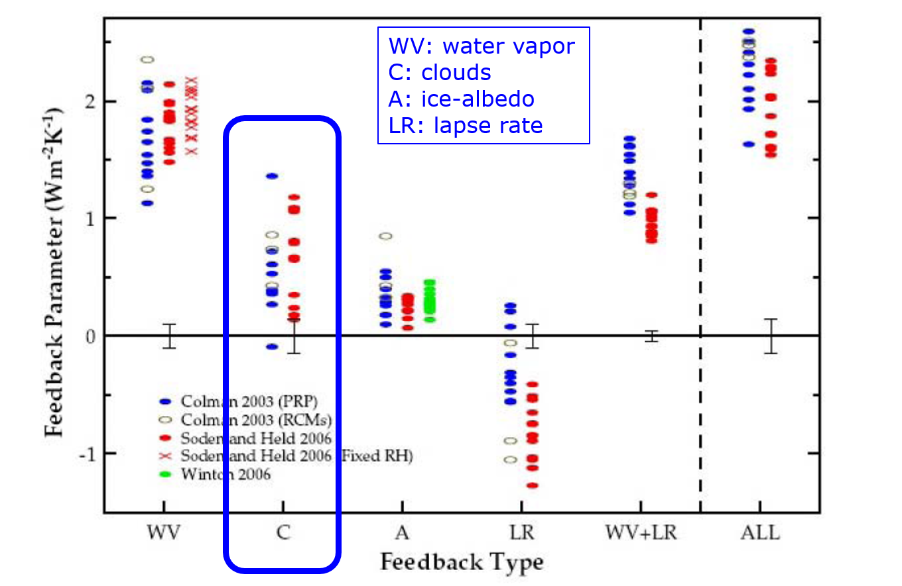

Climate Feedbacks
EES 3310/5310
Global Climate Change
Jonathan Gilligan
Class #8: Friday Sept. 7 2018
Lapse Rates
Which lapse rate is greater?
|
|
|
Lapse Rates
Feedback
Feedback
- \(Q\) is net heat flow into the earth:
- \(Q = I_{\text{in}} - I_{\text{out}}\),
- At Start: \(Q = I_{\text{in}} - I_{\text{out}} = 0\),
- \(T_{\text{ground}} = T_0\).
- Forcing: change \(Q \rightarrow Q_{\text{forcing}} > 0\)
- What happens?
- Response: \(T_{\text{ground}} \rightarrow T_0 + \Delta T\)
- Normally, \(\Delta T\) brings \(I_{\text{out}}\) back to balance with \(I_{\text{in}}\).
- With feedback, \(\Delta T\) causes a new forcing, \(\Delta Q_{\text{feedback}} = f \Delta T\)
- \(\Delta Q_{\text{feedback}}\) causes further change in \(T_{\text{ground}}\).
Examples of feedbacks
Ice-Albedo
- \(\Delta Q = f_{\text{ice-alb}} \Delta T\)
- What happens?
Water-vapor
- Temperature rises
- What happens to humidity?
- Humidity rises: more water vapor
- How does this affect \(\Delta Q\)?
- More water vapor \(\rightarrow\) bigger greenhouse effect
- \(I_{\text{out}}\) gets smaller
- \(\Delta Q = \Delta(I_{\text{in}} - I_{\text{out}}) > 0\)
- Positive \(\Delta T \rightarrow \text{Positive}~\Delta Q\)
- \(f = \Delta Q / \Delta T > 0\): positive feedback
Greenhouse effect
- Ground temp: \(T_{\text{ground}} = T_{\text{skin}} + h_{\text{skin}} \times \text{env. lapse}\)
Global warming
- Greater CO2 \(\rightarrow\) greater skin height.
- Warming: \(\Delta T_{\text{ground}} = \Delta h_{\text{skin}} \times \text{env. lapse}\)
- What does rising temperature do to water vapor?
Water Vapor Feedback

- Rising temperature \(\rightarrow\) greater humidity
- Greater humidity \(\rightarrow\) skin height rises even higher
- \(\Delta T_{\text{ground}} = \Delta h_{\text{skin}} \times \text{Lapse}\)
Testing Theory
Testing Theory of Water-Vapor Feedback
- Pinatubo erupts
- Model calculations with water vapor feedback correctly predict cooling
- Turn off water vapor feedback: incorrect predictions
Runaway Greenhouse
Runaway Greenhouse
- Equilibrium vapor pressure: \(p_{\text{eq}}(T)\)
- Actual vapor pressure \(p\)
- If \(p_{\text{eq}}(T) > p\), then \(p\) will rise.
- Rising \(p \rightarrow\) rising \(T \rightarrow\) rising \(p_{\text{eq}}(T)\).
- Equilibrium when \(p = p_{\text{eq}}(T)\),
- If vapor pressure curve does not hit equilibrium with water or ice, greenhouse will run away:
- Water will keep evaporating until oceans are dry.
Andrew Ingersoll & Runaway Greenhouse
1967: First class he ever taught
- Assigned homework:
- Calculate water vapor feedback
- Students couldn’t solve problem
- Fixed problem so students could solve it
- It worked for Earth, but not Venus
- Hmmmm …
- It would work for Venus if all the oceans boiled dry.
Andrew Ingersoll & Runaway Greenhouse
Wrote up results for publication
- Rejected by journal
- Submitted to another journal
- Rejected again
- Submitted to a third journal
- Accepted
- Now a classic paper
- Cited more than 200 times
Kombayashi-Ingersoll Limit
- Outgoing long-wave has to balance incoming sunlight
- Brighter sun \(\rightarrow\) hotter surface \(\rightarrow\) more water vapor
- Kombayashi-Ingersoll limit:
- Sunlight below limit, there is a stable equilibrium with liquid water
- Sunlight above limit, oceans boil dry
Cloud Feedbacks
Cloud Feedbacks
- What effect do clouds have on climate?
- What effects does climate have on clouds?
- Warmer \(\rightarrow\) more clouds
- More clouds:
- Higher albedo
- (cools earth: negative feedback)
- High emissivity: blocks longwave light
- (warms earth: positive feedback)
- Higher albedo
- Which effect is bigger?
Cirrus Clouds
Stratus Clouds
Cloud Feedbacks

Satellite Measurements
Radiative forcing by clouds
(negative = cooling, positive = warming)
Indirect Aerosol Effect
Indirect Aerosol Effect
- Aerosol particles \(\rightarrow\) more, smaller droplets
- Smaller droplets \(\rightarrow\) greater albedo, longer lifetime
- More droplets \(\rightarrow\) greater albedo, more absorption
Indirect Aerosol Effect

Summary of Feedbacks
Summary of Feedbacks

Feedback Mathematics
Feedback Mathematics
This mathematical section is for the graduate students. Undergraduates will not be responsible for this material.
Feedback Mathematics
- \(Q\) is heat coming into the earth:
- \(Q = I_{\text{in}} - I_{\text{out}}\),
- Start out: \(Q = I_{\text{in}} - I_{\text{out}} = 0\),
- \(T_{\text{ground}} = T_0\).
- Forcing: change \(Q \rightarrow Q_{\text{forcing}} > 0\)
- What happens?
- Response: \(T_{\text{ground}} \rightarrow T_0 + \Delta T\)
- What happens to \(Q\)
- Feedback: \(\Delta Q_{\text{feedback}} = f \Delta T\)
Stabilizing (Negative) Feedback
- Start out: \(Q = I_{\text{in}} - I_{\text{out}} = 0\),
- \(T = T_0\)
- Positive Forcing: change \(Q \rightarrow Q_{\text{forcing}} > 0\)
- Response: \(T_{\text{ground}} \rightarrow T_0 + \Delta T\)
- Feedback: \(\Delta Q_{\text{feedback}} = f \Delta T\)
- New equilibrium: \[\begin{aligned} \Delta Q &= - Q_{\text{forcing}}\\ Q &= Q_{\text{forcing}} + \Delta Q \\ &= Q_{\text{forcing}} - Q_{\text{forcing}} = 0 \end{aligned}\]
- \(\Delta T = \Delta Q / f = - Q_{\text{forcing}} / f\)
Stefan-Boltzmann Feedback
Bare rock:
- \(I_{\text{out}} = \epsilon\sigma T^4\)
- \(f_{\text{SB}} = - 3.2~\mathrm{W m^{-2} K^{-1}}\)
- Forcing: \(Q_{\text{forcing}} = I_{\text{in}} - I_{\text{out}} = +1~\mathrm{W m^{-2}}\)
- Will this warm or cool the planet?
- \(\Delta T = - Q_{\text{forcing}} / f\)
- \[\Delta T = \frac{-1~\mathrm{W m^{-2}}}{-3.2~\mathrm{W m^{-2} K^{-1}}} = +0.32~\mathrm{K}\]
- Is Stefan-Boltzmann feedback positive or negative?
- Negative because although temperature rises, SB feedback stabilizes it.
Positive & Negative Feedback
Positive & Negative Feedback
- Total feedback: \(f = f_0 + f_1 + f_2 + \cdots\)
- \(f_0 = f_{\text{SB}}\): Stefan-Boltzmann
-
Other feedbacks \(f_1, f_2, \cdots\):
-
Positive (\(f_i > 0\)): amplifies temperature change
- Warmings \(\rightarrow\) hotter
- Coolings \(\rightarrow\) colder
-
Negative (\(f_i < 0\)): diminishes temperature change
- Warmings \(\rightarrow\) milder
- Coolings \(\rightarrow\) milder
-
Positive (\(f_i > 0\)): amplifies temperature change
Amplification
\[\begin{aligned}
a &= \frac{f_0}{f} = \frac{f_0}{f_0 + f_1 + f_2 + \cdots}\\
f_0 &= f_{\text{SB}} = \text{Stefan-Boltzmann feedback}
\end{aligned}\]
\[\begin{aligned}
\Delta T &= \frac{\,- Q_{\text{forcing}}}{f}\\
&= a \times \frac{\,-Q_{\text{forcing}}}{f_0}
\end{aligned}\]
-
\(a > 1\): net feedback is positive:
- more severe warmings, coolings.
-
\(a < 1\): net feedback is negative:
- milder warmings, coolings.
Stability of the Climate
- Most feedbacks we’ve discussed are positive:
- Ice-albedo
- Water vapor
- Clouds (mostly)
- Why don’t these positive feedbacks make the climate unstable? (e.g., runaway greenhouse)
- Because they are smaller than the negative Stefan-Boltzmann feedback, so the total feedback remains negative.
- Thus, positive feedbacks make global warming much greater than it would be with just the Stefan-Boltzmann feedback, but they’re not big enough to destabilize the planet.
- Many scientists worry that there may be a threshold of global warming where the positive feedbacks will become greater than Stefan-Boltzmann and destabilize the climate.